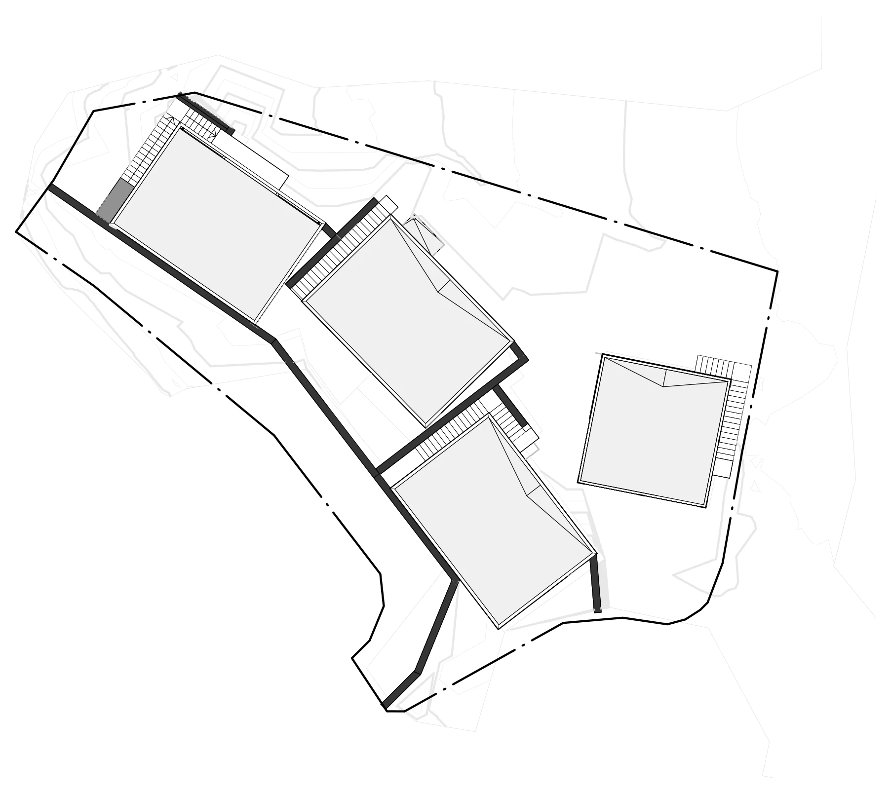
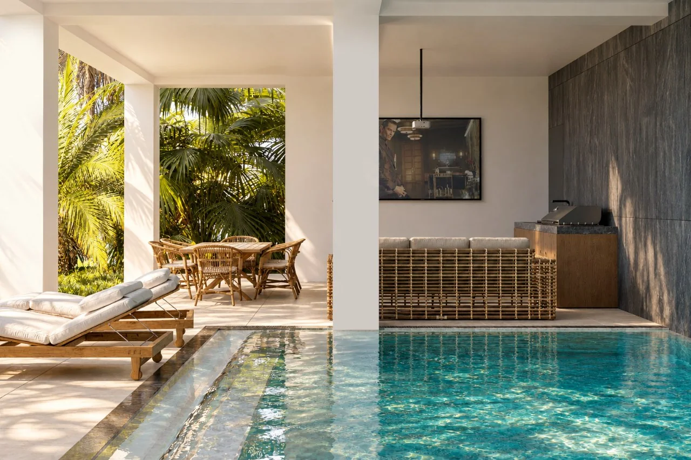
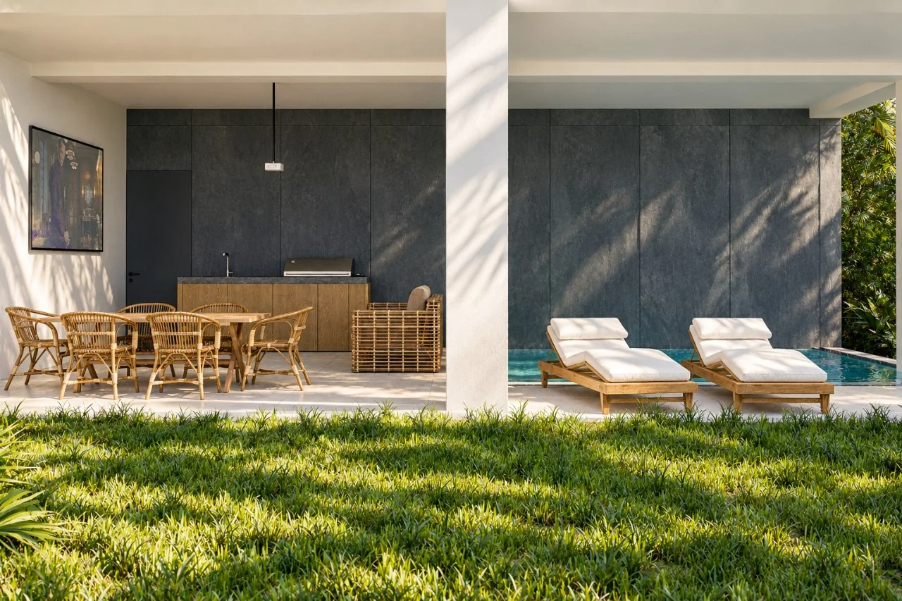
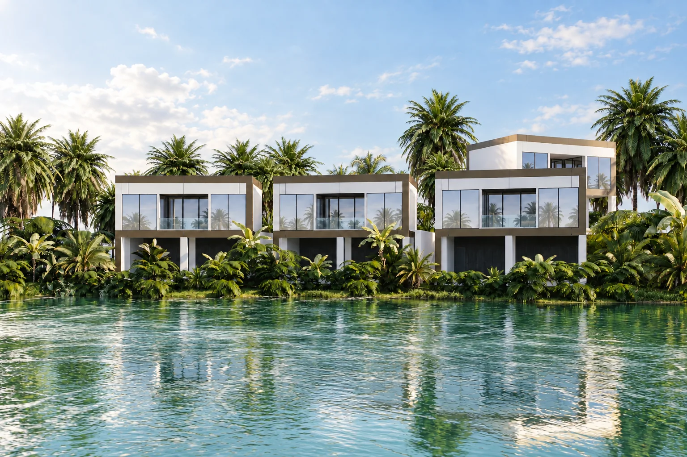
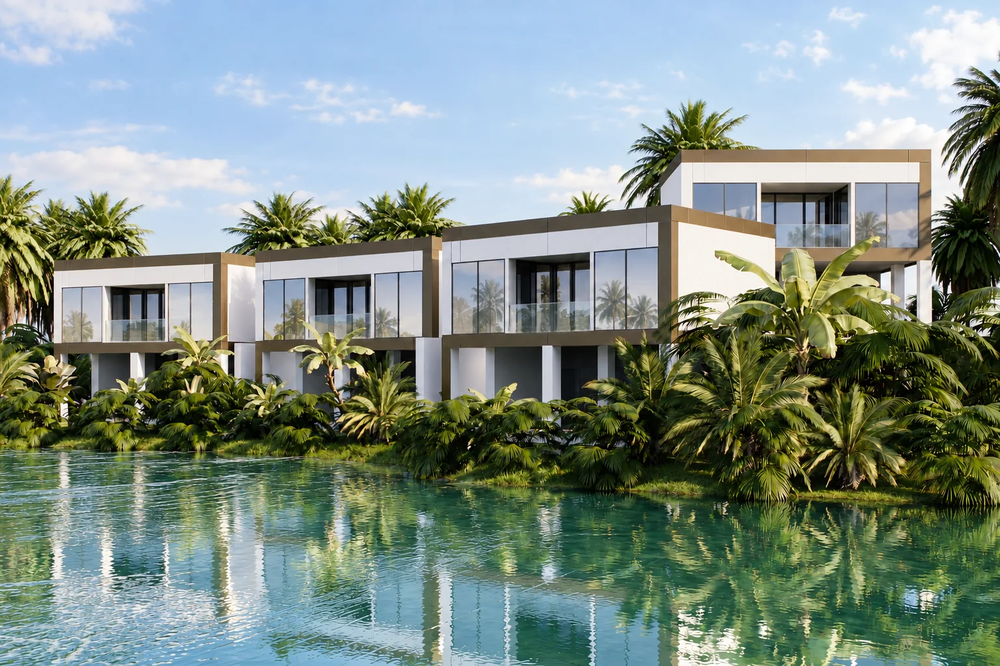

Проект
Комплекс из 4 вилл
Комплекс из четырех вилл в тропической зелени: белые объемы с бронзовой окантовкой, открытые террасы и бассейны.


Тип Комплекс вилл
Площадь 450 м²
Локация о. Бали, Индонезия
Статус В реализации




